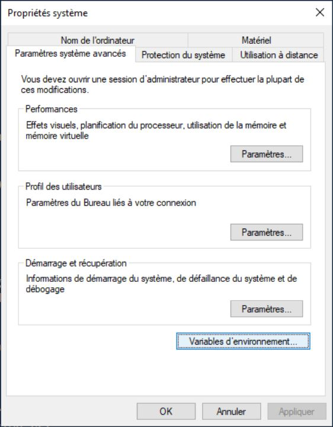

| Home | Documentation | Installation | GitHub |
Populse_mia’s Windows-PowerShell installation, pre-requirements¶
- First, assure that you activated the developer mode in the parameters:
Warning
This operation needs administrator rights
- Click on Start –> Parameters
- Go in Update and Security

- Click on Developer environment in the left column and activate the Sideload app

- You might need to restart your computer
When you restarted your computer, open a PowerShell window on your computer:
- Click on the Start menu and type
PowerShell
- Run the PowerShell application
- Click on the Start menu and type
{kind=link}
Make sure you have Python installed. You can verify it by typing in PowerShell:
python3 -V
Note : depending on your versions, you might need to use `python -V` instead on `python3 -V` to check your version of Python.
{kind=link}
Make sure you have Git installed. You can verify it by typing in PowerShell:
git --version
- If Git is not installed, you need to install it (Here):
- Download the executable for your specific distribution (64 or 32 bits).
- Run it.
- You will be asked many questions depending on you preferences, but the default parameters are enough.
- At the end of the git installation, you will need to restart PowerShell to restart the environment and be able to use Git.
- If Git is not installed, you need to install it (Here):
During the install, you will need C++ Build tools. You can get it by installing Visual Studio Build Tools 2019 and select C++ Build tools (Here):
- Download the executable file and run it.
- The installation is in two parts, at the end of the first part a window with every module in charge by Visual Studio will open:

- Select the C++ Build Tools and install it.
Make sure you have java 64-bits installed. You can verify it by typing in PowerShell:
java -version
- If java 64-bits is not installed, you need to install it (Here):
- Download the offline (64 bits) file and run it
- Follow the installation
- If java 64-bits is not installed, you need to install it (Here):
- Now you need to configure your java in order to be used by your system and PowerShell:
Warning
This operation needs administrator rights

In PowerShell, open a system properties window by typing:
sysdm.cplClick on the Advanced System Parameter
{kind=link}
{kind=link}
- Click on New

Paste the path to the folder containing YOUR java executable, it should LOOK like this:
C:\Program Files\Java\jre1.8.0_251\bin
- Enable the NTFS long path:
Warning
This operation needs administrator rights
{kind=link}
Populse_mia requires some specific package for Python and particularly numpy and PyQt5, you need to install them before launching the populse_mia installation:
pip3 install numpy --user # be sure to don't forget the "--user" at the end of the command, otherwise you might get issues from administrator rights pip3 install PyQt5 --user # be sure to don't forget the "--user" at the end of the command, otherwise you might get issues from administrator rights